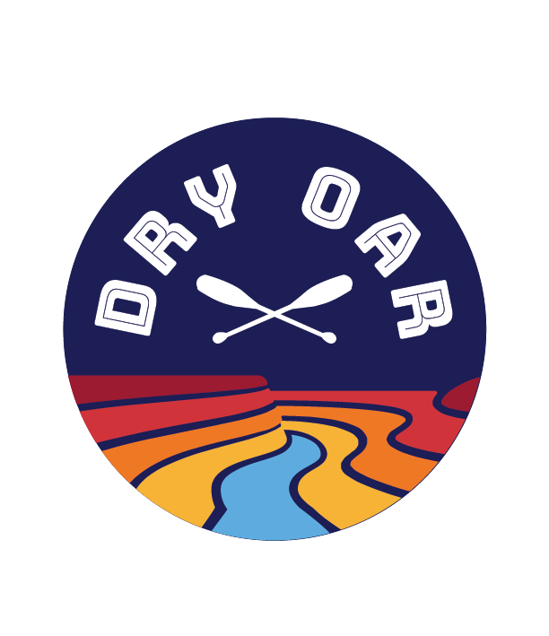

OVERVIEW
PURPOSE
The purpose and goal for our White Water Rafting website is to increase our customer base by appealing to core clients, (i.e families, corporate retreats, church and youth groups, individuals), who love to have fun in the outdoors and also have a desire to take care of our natural resources. We want to advance our mission of becoming a leader in eco-tourism by providing opportunities to educate our clients on the local rivers and how we can best help preserve the environment that provides us with fun outdoor experiences such as white water rafting while also appealing to clients of all skills and levels of white water rafting.
AUDIENCE
The target audience includes families, church/youth groups, corporate teams and individuals, male and female, ages 11-65; novice to expert rafters. Anyone who enjoys being active in the outdoors and appreciates efforts to preserve the environment. Colors and content will support the beauty of nature and specifically the colors found on the canyon walls and water of the river; including pictures of rafting experiences while also emphasizing a focus on environmental preservation. All information will be provided and easily navigated on a computer or mobile device.
BRANDING
WEBSITE LOGO
STYLE GUIDE
COLOR PALETTE
Palette URL:
https://coolors.co/313763-d0383c-f3b235-5dabde| Primary | Secondary | Accent 1 | Accent 2 |
|---|---|---|---|
| #313763 | ##5DABDE | #F3B235 | #D0383C |
TYPOGRAPHY
HEADING FONT: NERKO ONE
PARAGRAPH FONT: NUNITO
NORMAL PARAGRAPH EXAMPLE
The best Whitewater Rafting in Colorado, White Water Rafting Company offers rafting on the Colorado and Roaring Fork Rivers in Glenwood Springs. Since 1974, we have been family owned and operated, rafting the Shoshone section of Glenwood Canyon and beyond.
COLORED PARAGRAPH EXAMPLE
Trips vary from mild and great for families, to trips exclusively for physically fit and experienced rafters. No matter what type of river adventures you are seeking, White Water Rafting Company can make it happen for you.
NAVIGATION
SITE MAP
WIREFRAMES
HOME